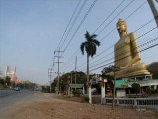
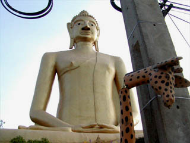
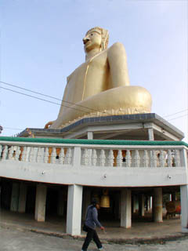
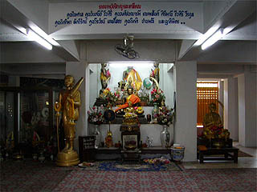
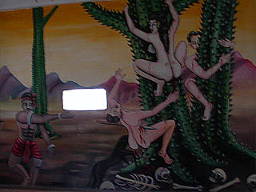
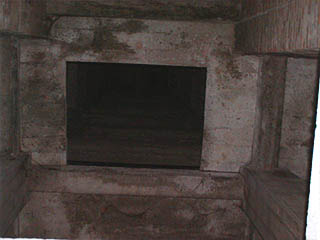
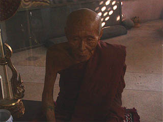

ワットサッボーン
WatSapBon/Saraburi
バンコクとイサーン（タイ東北地方）を結ぶ大動脈、国道２号線沿いにある大仏。
周辺には大きな工場などがあり（下写真左端）、呑気な田舎道という雰囲気ではない。
ある意味タイの現代社会を象徴するような巨大工場と大仏の組み合わせは一見ミスマッチに見えるがさにあらず。
コンクリ大仏もまた現代社会の象徴なり。

大動脈だけあって交通量も多く、しかも時速100キロ以上で走っているので道端で写真を撮っているだけでも怖かった。
実はこの大仏さんも交通安全祈願で建てられたらしい。
 
大仏さんの前には首の折れたキリンや虎、托鉢の坊さん、ナーガなどのセメント像があった。

台座の中には祭壇があり、仏像が祭られているが全体的にガラーンとした雰囲気。

壁面には地獄絵図が。これはタイの地獄には欠かせない（と思われる）トゲトゲの木登り地獄。
しかも鑓とかさされていて悲惨係数120％。

大仏の真下から上を見上げるの図。
胎内が使われている様子は全くない。
この大仏の大きさは20メートル。決して中に入れないスケールではないのだが。
建設時期は1961年から1972年との事。
タイのコンクリ大仏の建設ブームは概ね1960年代あたりから始まるようだ。
その後ブームは現在まで続きっぱなしなので、日本のように大仏建設ラッシュはいつ、といったような時代区分は出来ないのだが、ここの大仏さんは第一期の比較的古い時期の大仏さん、という事になろう。
大仏に限った事ではないが、タイの仏像はしょっちゅう塗り替えられているのでいつもピカピカで、ここの大仏も1972年に完成したとは思えない位外側は奇麗だ。
しかし台座の中の暗〜い雰囲気は70年代のコンクリート建築そのものだ。

祭壇の横にはここの坊さんだったのだろうか、ガラスケースの中にこんな人形がありました。
こんなのってミャンマーでもみたけど、ロウ人形なんだろうか？
一瞬、本物の生きてる坊さんかと思って物凄いビックリしました。
次はパタヤだ！
泰国超絶地獄列伝
珍寺大道場 HOME